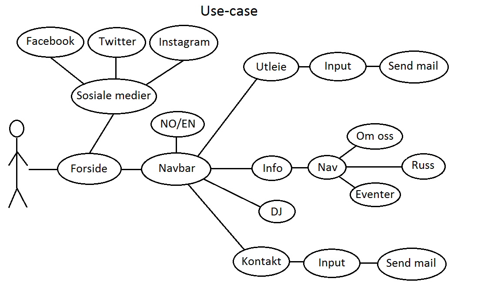
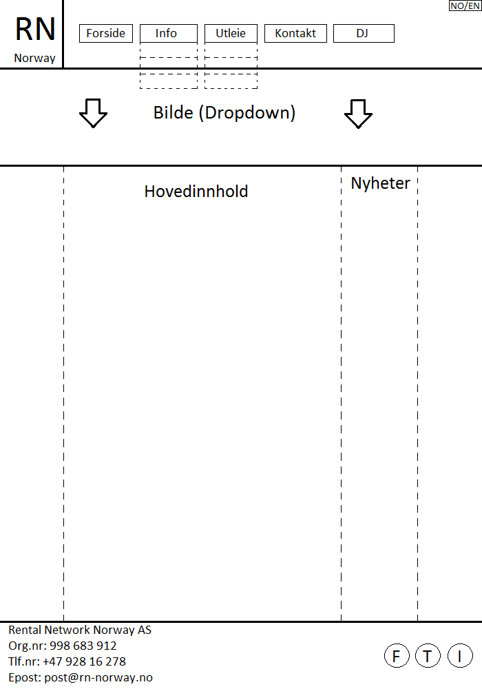
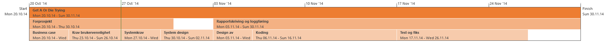
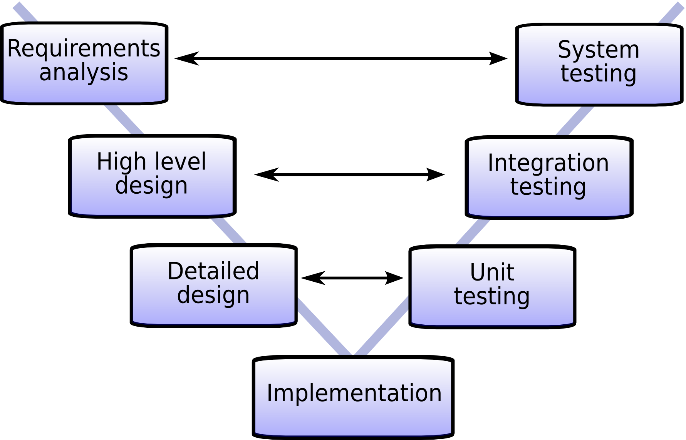

FORPROSJEKT

Planlegging
Oppgave
"The assignment is to come up with a concept and a website that supports that concept. I posted a clarification on fronter that said "look around at popular websites and try to understand what it is about them that brings value to the market and how you can create value for your users." and what you can do that's unique and creates value in a way that other companies (e.g., facebook, google, snapchat, etc.) haven't thought about" I think that is a pretty ambitious goal. So I hope that clarifies things a bit. If you have more specific questions, I'm happy to discuss further. Or if you have thoughts about what you'd like to do, I can let you know if that's appropriate. So yes, it's a website, it's a group project, and it should have some practical implications and demonstrate some foresight in terms of identifying users and how you can create value for them. If it helps to think of it in entrepreneurial terms, consider your group a startup and you want to market a service to a particular user group in a way that provides a better alternative to existing services."
Prosjektet
Forslag
1. IT-KONSULENT FIRMA som selger sitt firma.
2. Gjøre en gammel nettside bedre. F.eks Sportogmosjon
3. Nettside for et produkt, software eller tjeneste. (Deksel til snusboks, se Apple sine produkter og nettsider.
4. Et produkt som er umulig å lage, men som burde vært realitet. Reklamere for dette.
5. Nettside for mat hjem på døra.
6. Lage en nettside som allerede eksisterer. F.eks Rental Network - Norway
Rental Network Norway
Rental Network Norway leverer bemanning og utstyr til festivaler, konserter, kulturproduksjoner, firmaer og privatpersoner. De har en moderne og meget fleksibel utstyrspark og er klare til å levere til alle typer oppdrag. Fokuset deres ligger i kreative og nyskapende løsninger, og tett kundeoppfølging før, under og etter arrangementet. RN-Norway sin visjon er å skape unike og trygge opplevelser. Med sine 4 faste ansatte og bred freelancer-/ teknikker-stall, er du sikret erfarene og politelige teknikkere og prosjekledere som er ivrige etter å bistå deg og ditt arrangement.
Use Cases
Prototype av grensesnitt
Fordeling av arbeidsoppgaver
Ansvarsområder
Gruppeleder: Fredrik
CSS: Jens
Javascript: Elias
HTML: Filip
Rapport: Fredrik
Alle sørger for å loggføre sitt eget arbeid.
Milepælsplan
The main project
20.10.14 - 30.11.14
Forprosjektet
20.10.14 - 30.10.14
Rapportskriving og loggføring
03.11.14 - 30.11.14
Teknologier vi skal bruke
F.eks dropdown box?
Arbeidsmetode
Til prosjektet vårt vurderte vi flere arbeidsmetoder, men endte opp med V-modellen. V-modellen passer godt i vårt tilfelle da kravene fra oppdragsgiver er klare, og den er lett å bruke. Likevel er ikke V-modellen skuddsikker når det kommer til fleksibilitet. Det er derfor viktig at vi er fleksible ovenfor endring av brukerkrav underveis. Vi har valgt V-modellen til vårt prosjekt fordi vi anser den til å være den beste arbeidsmetoden  for softwareutvikling i den skalaen vi jobber i.
Business Case: Dette er oppdragsgivers ønske:
Nettsiden dere lager skal ha en oversiktlig menybar, og med et design med farger som matcher logoen vår. Strukturen skal være oversiktlig, og lett for brukeren og navigere seg gjennom siden. Det skal finnes en nyhetsspalte hvor det skal være lett for oss og legge inn nyheter, som alltid vises. Siden skal også gjøres mer internasjonalt.
Requirements: Kravene til brukervennlighet.
Hvorfor Github?
Github er utrolig praktisk for at flere personer kan kode på samme fil. Problemet vårt er at vi ikke har noe særlig kjennskap til Git. Vi brukte derfor god tid til å sette oss inn i dette, før vi kom frem til noe som helst svar. Etter mange problemer med forståelsen av Github, begynte vi å se lys i enden av tunnelen. Vi ser allerede nå at det kommer til å by på problemer med diverse konflikter. Vi kom frem til at vi til slutt vil spare mer tid på å bruke Git, i forhold til hvor mye tid vi bruker på å forstå hvordan Git fungerer. Vi kommer derfor til å bruke Github for kildekodekontroll.